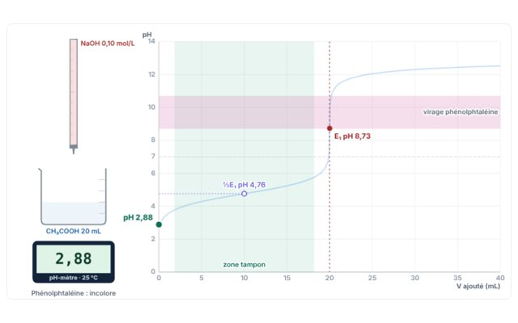
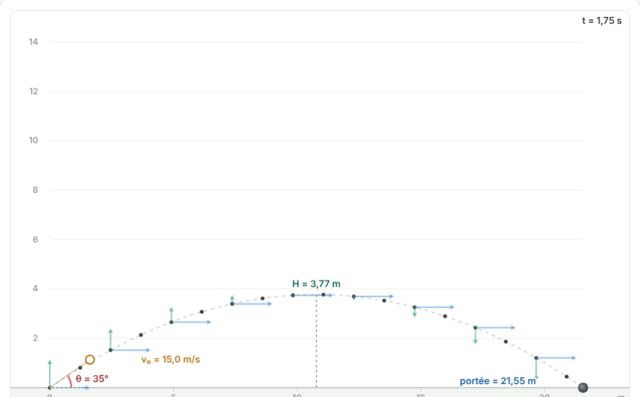
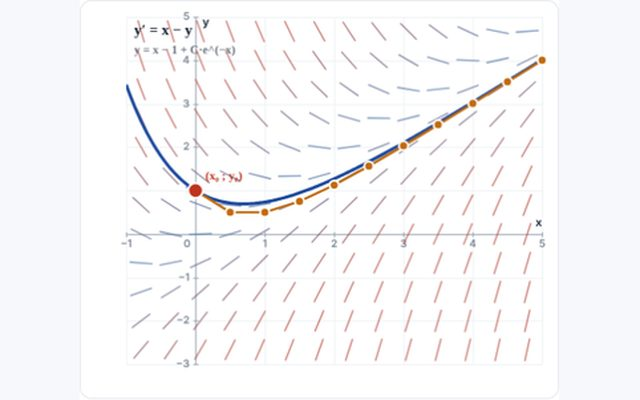
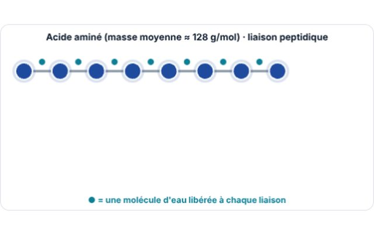
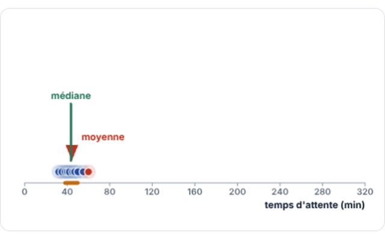

100 % gratuit
À essayer en premierL'université en simulations interactives.
Chimie, physique, mathématiques, biologie et biostatistique de première année : chaque chapitre a ses simulations, son rappel théorique animé et ses exercices corrigés du ★ au ★★★★★.
243simulations
610exercices et QCM
5matières

ChimiePremière année d'université (BA1)5 cours
Médecine, dentisterie, pharmacie, sciences biomédicales, sciences, polytechnique.
Université · BA1Chimie19 chapitres · 74 simulations · 330 exercices — Mole, nomenclature inorganique et stœchiométrie · Atome, spectre et radioactivité · Configuration électronique, nombres quantiques et tableau périodique · Liaison, mésomérie et hybridation…

Université · BA1Physique61 simulations : mécanique, ondes, optique, électricité ; exercices et QCM par chapitre.

Université · BA1Mathématiques10 chapitres · 10 simulations · 0 exercices — Fonctions réelles et graphes · Limites, continuité, asymptotes · Dérivées et applications · Intégrales…

Université · BA1Biologie10 chapitres · 50 simulations · 140 exercices — Molécules du vivant et eau · Cellule, organites et techniques d'observation · Membranes et transports · Communication cellulaire, excitabilité et homéostasie…

Université · BA1Biostatistique10 chapitres · 48 simulations · 140 exercices — Statistique descriptive · Probabilités · Bayes et tests diagnostiques · Lois binomiale, de Poisson et normale…
Aucun cours ne correspond.